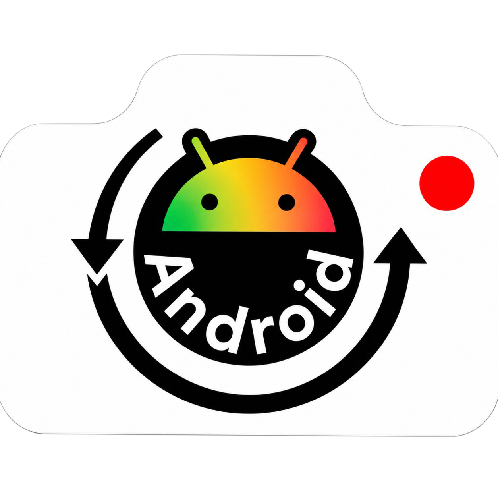

Launcher compatibility
Work is focused on Android environments such as Mojo Launcher and Zalith Launcher, including input, rendering, native libraries and filesystem behavior.

An Android-focused port of Flashback, adapted for mobile Minecraft launchers, ARM64 devices and the limitations of the Android runtime.
Work is focused on Android environments such as Mojo Launcher and Zalith Launcher, including input, rendering, native libraries and filesystem behavior.
Desktop-only components are replaced or adapted so Flashback can operate inside Android Minecraft launcher constraints.
Exports can use a predictable in-game directory instead of relying on unsupported desktop-native file dialogs.
Blaze3D, RenderPearl, OpenGL, ImGui and launcher renderer differences are part of the compatibility work.
Android dependency builds for Flashback Mod.
Note: Install Flashback along with the mod
A look at Flashback Redroided on Android.
Real footage from the Android build, captured from the project demo.
Screenshots are extracted from the uploaded Flashback Redroided demonstration video.
Working target with Android launcher-specific adjustments.
ImGui integration is being adapted for Android touch and virtual mouse behavior.
Android-safe export paths replace desktop native dialogs.
RenderPearl, Blaze3D and MobileGL differences remain an active area of development.
FFmpeg packaging and JavaCPP ARM64 loading remain under development.
This project is based on the Flashback project by Moulberry. Refer to the original project's license and attribution requirements when distributing derivatives.
Android-specific porting, compatibility work and launcher integration are developed by WhalterMC.